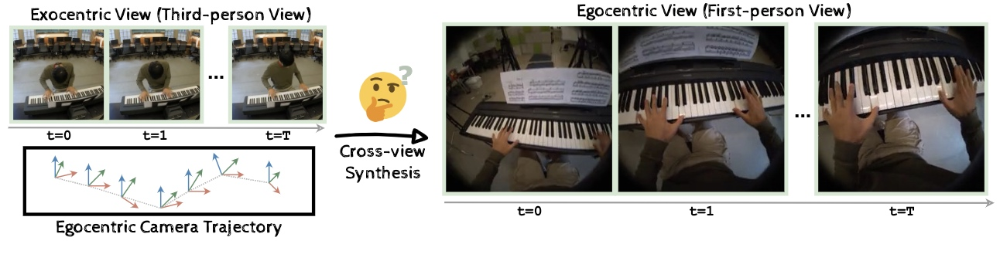
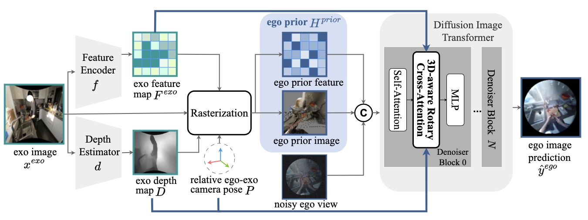
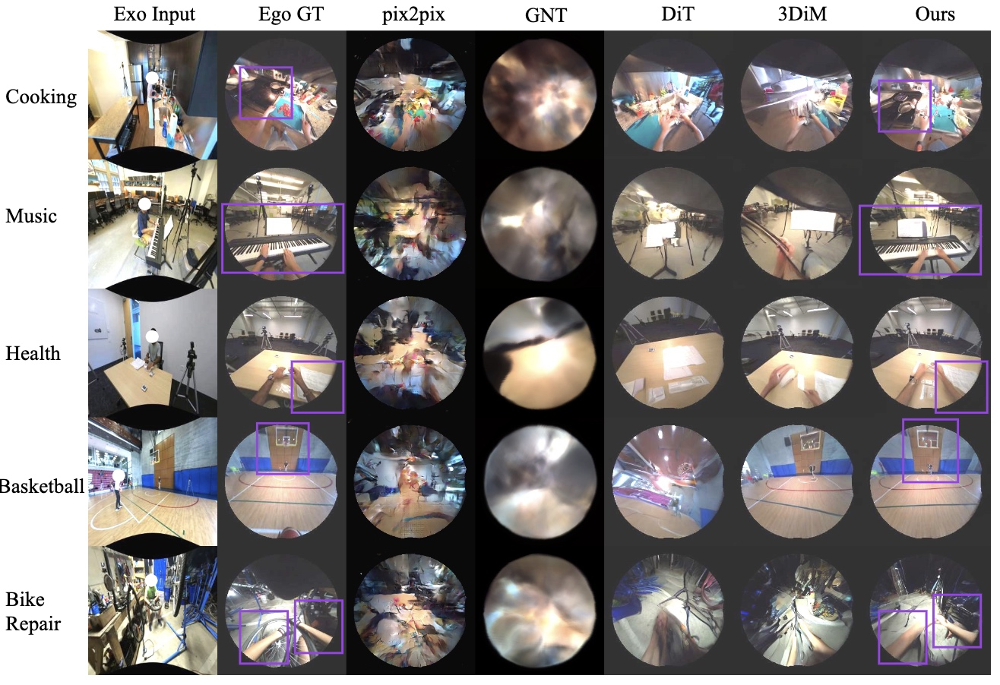

4Diff: 3D-Aware Diffusion Model for Third-to-First Viewpoint Translation
Feng Cheng1,3* , Mi Luo2* , Huiyu Wang1 , Alex Dimakis2 , Lorenzo Torresani1 , Gedas Bertasius3 , Kristen Grauman1,2
1 FAIR, Meta AI, 2 The University of Texas at Austin
3 University of North Carolina at Chapel Hil
* Equal Contribution
ECCV 2024
We present 4Diff, a 3D-aware diffusion model addressing the exo-to-ego viewpoint translation problem. This task involves generating first-person (egocentric) view images from third-person (exocentric) images. Leveraging the diffusion model's ability to generate photorealistic images, we propose a transformer-based diffusion model incorporating geometry priors via the proposed mechanisms: (i) egocentric point cloud rasterization and (ii) 3D-aware rotary cross-attention. Egocentric point cloud rasterization converts the input exocentric image into an egocentric layout, which conditions the diffusion image transformer. We propose a 3D-aware rotary cross-attention to further incorporate 3D information and semantic exocentric features into the diffusion transformer. Our approach performs state-of-the-art on the challenging and diverse Ego-Exo4D multiview dataset and exhibits robust generalization to novel environments not encountered during training.
1 FAIR, Meta AI, 2 The University of Texas at Austin
3 University of North Carolina at Chapel Hil
* Equal Contribution
ECCV 2024

Abstract
We present 4Diff, a 3D-aware diffusion model addressing the exo-to-ego viewpoint translation problem. This task involves generating first-person (egocentric) view images from third-person (exocentric) images. Leveraging the diffusion model's ability to generate photorealistic images, we propose a transformer-based diffusion model incorporating geometry priors via the proposed mechanisms: (i) egocentric point cloud rasterization and (ii) 3D-aware rotary cross-attention. Egocentric point cloud rasterization converts the input exocentric image into an egocentric layout, which conditions the diffusion image transformer. We propose a 3D-aware rotary cross-attention to further incorporate 3D information and semantic exocentric features into the diffusion transformer. Our approach performs state-of-the-art on the challenging and diverse Ego-Exo4D multiview dataset and exhibits robust generalization to novel environments not encountered during training.
Method

Results

Copyright © 2015 Powered by MWeb, Theme used GitHub CSS.